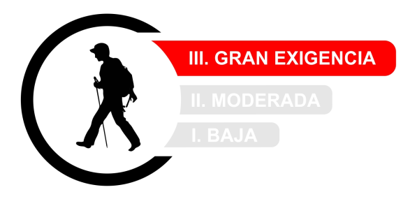
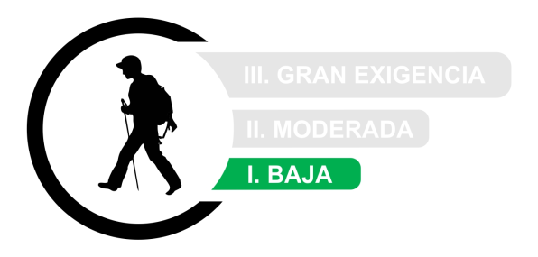
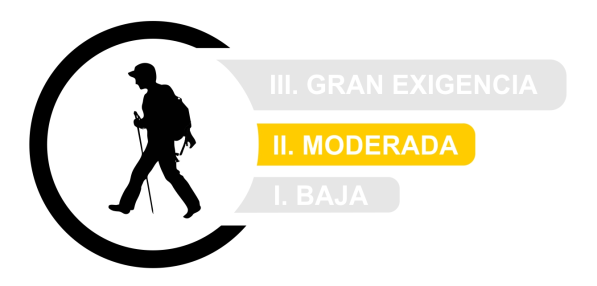

Actividades

Los Gigantes
Sendero muy técnico y con zonas de mucho peligro. Iniciamos el sendero en la calle S. Pedro En Tamaimo, conectamos con el sendero TF 65 a la izquierda bajando unos 200m nos desviamos a la derecha para subir al canal, lo seguimos hasta llegar al primer túnel, paso de los Sauces 1 de 1200m de longitud a la salida seguimos por el canal, donde nos encontramos con un paisaje impresionante, a la derecha parte alta tenemos el Risco Blanco y a la izquierda el Barranco Mancha los Diaz. Avanzamos unos dos kms por el canal hasta llegar al segundo túnel, paso Los Sauces 2, este se encuentra con puertas cerradas a ambos lados pero se puede acceder por un pequeño hueco, este tunel tiene una longitud de 1100m a la salida nos encontramos con el Barranco del Natero avanzamos unos 200m y descendemos al cauce del barranco seguimos unos 300m siguiendo unos majones, fijarse bien porque llegas a un sendero a la derecha que nos lleva paralelamente al cauce del barranco con unas vistas impresionantes,al llegar a la galería cogemos la ruta del canal con zonas de mucho peligro( no apto para personas con vértigo a las alturas) seguimos unos 4 km con unos paisajes maravillosos de la playa de Barranco Seco. Llegamos al último paso, Los Topos, a su salida tenemos una maravillosa vista de Los Gigantes, descendemos con mucho cuidado, terreno muy resbaladizo, llegamos a un cruce en el sendero, nosotros hemos entrado a la derecha para entrar a la zona del tubo (zona muy, muy peligrosa) volvemos por donde hemos venido hasta llegar al sendero de frente que nos llevará hasta Los Gigantes, Calle Tabaiba.
Recorrido "Cerro Mogote"
La punta más alta de esta serie de montañas y, por esto, brinda una visión 360 grados de Los Gigantes. El camino comienza por el sendero norte con una caminata intensa de 5 horas. Luego, una vez en la base del cerro, el grupo aprovecha para dejar mochilas y cargamento en un refugio y se prepara para afrontar el último tramo hasta la cima. La caminata es de dificultad media/alta y lleva todo un día.
Recorrido "Valle de Los Lisos"
Caminata está en clavada en medio de Los Gigantes y tiene una extensión de unos 16 km ida y vuelta. El paseo comienza por la ladera de una montaña, luego junto a unos pajonales y finalmente hasta la base del macizo. En el camino se podrá escuchar el sonido de algunos arroyos de la zona y el aroma a hierbas serranas. El ingreso se encuentra en la Reserva Valle de Los Lisos y allí mismo se podrá contratar un guía
Dificultad para estos recorridos
Consultá el clima Acá

Los Terrones
El Parque Autóctono Cultural y Recreativo Los Terrones es uno de los tesoros de Capilla del Monte. Está en la lista de imprescindibles de cualquier turista que llega a esa ciudad. Es que la belleza natural de sus formaciones rocosas lo convierten en una visita obligada. Los Terrones es un parque natural privado, que se ubica a 17 km de Capilla del Monte. Para llegar, hay que transitar un camino de 7 km de ripio que parte desde la RN 38. Después de algunos km, el camino anticipa la espectacularidad del Parque con formaciones rocosas que se van asomando en cada curva. La llegada con el auto es hasta la zona en la que se encuentra el parador, que funciona como Casa Museo. Desde allí parte la travesía. Se puede elegir entre una caminata larga (de dos horas aproximadamente), que tiene una dificultad media-baja, y una corta (de 15 minutos) con llegada a un mirador. Ésta última es auto guiada. La caminata larga se hace en compañía de un guía, que pedirá una contribución a voluntad Antes de comenzar la caminata, el guía da indicaciones e instrucciones y también algunos detalles. Será muy exigente con la contaminación sonora. El silencio es fundamental para no alterar el ecosistema y para tener la oportunidad de ver la fauna del lugar El punto máximo del recorrido está a 1.540 metros sobre el nivel del mar. La vista es imponente. Formaciones rocosas naturales de distintas tonalidades rojizas que forman un paisaje único coronan el paisaje. El color va cambiando junto con la luz del día y varía siempre en la gama de los rojos y los naranjas. Hacia donde se mire, la majestuosidad sorprende. Algunos tendrán la suerte de ver jotes de cuello colorado sobrevolando la zona Los terrones parecen pintados a mano. Se trata de areniscas de origen triásico de color rojizo, que fueron erosionadas por la acción del viento, generando formas increíbles. Mirando con atención, se pueden identificar tortugas, un camello acostado, la famosa cara del indio y hasta un platillo volador. El Parque Autóctono, Cultural y Recreativo Los Terrones es un refugio, un lugar en el que la naturaleza permanece inalterable. Un trekking para los sentidos. Se sienten los aromas de la flora autóctona, el sabor natural del agua de los arroyos y cascadas y el viento colándose entre los terrones. El punto de llegada es el mismo que el punto de partida. Allí está el 'Parador Los Terrones', listo para recibir aventureros que deseen disfrutar de comidas y platos caseros. Entre otras cosas, tienen un menú que incluye entrada, plato principal y postre
Dificultad para este recorrido
Consultá el clima Acá

Cerro Champaquí
Esta excursión te permite conocer los rincones de las Sierras Grandes y ascender a la Cumbre más alta de la Provincia de Córdoba: El Cerro Champaquí. El Cerro Champaquí, con sus 2.790 m.s.n.m. es el punto más alto de la Provincia de Córdoba. Se encuentra ubicado entre los valles de Calamuchita y Traslasierra, en el cordón montañoso que se denomina “Sierras Grandes”. Poder llegar a su cima por la ruta tradicional no posee dificultades técnicas, sino el esfuerzo físico de trekking en la montaña de 45 kilómetros. Este desafío de escalar el cerro Champaquí es apto para todas aquellas personas con estado físico y de salud normales. El entrenamiento previo siempre es recomendable para aquellas personas que no están acostumbradas a la actividad. La ladera Este de las Sierras Grandes de Córdoba nos ofrecen una ruta de ascenso al Champaquí desde la localidad de Villa Alpina. Este poblado pintoresco rodeado de montañas, se encuentra a sólo 40km de Villa General Belgrano, será donde iniciaremos nuestra caminata para el ascenso. Recorreremos tres intensos días por la Reserva Natural Pampa de Achala, conociendo emblemáticos lugares del sector: Los Pinares, el Desierto de la Virgen, el Cerro Lechiguanas, «La Cancha», la Cueva de los 40 y la inigualable cumbre de 2.790 ms.n.m. del Cerro Champaquí.
Recorrido "Cerro Champaquí"
De 6 a 8 horas diarias (tiempo estimado). Todo será transitado por terrenos irregulares, con leves, medianas y elevadas pendientes, con mochila con cargas 10kg promedio. NO se requiere experiencia previa, es necesario un buen estado físico y estar listos para disfrutar 3 días en la montaña. Es recomendable para mayores de 12 años.
Dificultad para este recorrido
Consultá el clima Acá